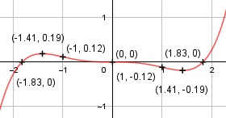

Aufgabe 70 f(x) = (1/20)x5 - (1/6)x3 f'(x) = 0,25x4 - 0,5x2, f''(x) = x3 - x, f'''(x) = 2x2 - 1 Definitionsbereich: -∞ < x < ∞ Wertebereich: -∞ < f(x) < ∞ Asymptoten: - Symmetrie zur y-Achse bzw. zum Punkt (0|0): f(-x) = (1/20)(-x)5 – (1/6)(-x)3 f(-x) = -(1/20)x5 + (1/6)x3 ≠ f(x) --> keine Achsensymmetrie -f(-x) = -(-(1/20)x5 + (1/6)x3) -f(-x) = (1/20)x5 - (1/6)x3 = f(x) ---> Punktsymmetrie nur ungerade Exponenten von x Nullstellen: f(x) = 0 (1/20)x5 - (1/6)x3 = 0 |*60 3x5 - 10x3 = 0 x3 * (3x2 - 10) = 0 x3 = 0 | x1,2,3 = 0 3x2 - 10 = 0 |+10 3x2 = 10 |:3 x2 = 10/3 |ⱱ x4,5 = ± 1,83 N1,2,3(0|0), N4(1,83|0), N5(-1,83|0) Schnittpunkt mit der y-Achse: x = 0 f(0) = (1/20) * 05 - (1/6) * 03 = 0 Sy(0|0) Extrempunkte: f'(x) = 0 0,25x4 - 0,5x2 = 0 0,25x2 * (x2 - 2) = 0 0,25x2 = 0|:0,25 x2 = 0 x1,2 = 0, f(0) = 0 x2 - 2 = 0 |+2 x2 = 2 |ⱱ x3,4 = ± 1,41, f(1,41) = (1/20) * 1,415 - (1/6) * 1,413 = -0,19 f(-1,41) = 0,19 wegen Punktsymmetrie f''(0) = 03 - 0 = 0 f''(1,41) = 1,413 - 1,41 > 0 --> Tiefpunkt (1,41|-0,19) f''(-1,41) = (-1,41)3 - 1,41 < 0 --> Hochpunkt (-1,41|0,19) Wendepunkte: f''(x) = 0 x3 - x = 0 x * (x2 - 1) = 0 x1 = 0 x2 - 1 = 0 |+1 x2 = 1 |ⱱ x2,3 = ± 1 f(1) = (1/20) * 15 - (1/6) * 13 = -0,12 f(-1) = 0,12 wegen Punktsymmetrie f'''(0) = 2 * 02 - 1 ≠ 0, f'(0) = 0, f''(0) = 0 --> Sattelpunkt (0|0) f'''(1) = 2 * 12 - 1 ≠ 0 --> Wendepunkt (1|-0,12) f'''(-1) = 2 * (-1)2 - 1 ≠ 0 --> Wendepunkt (-1|0,12) Graph:
